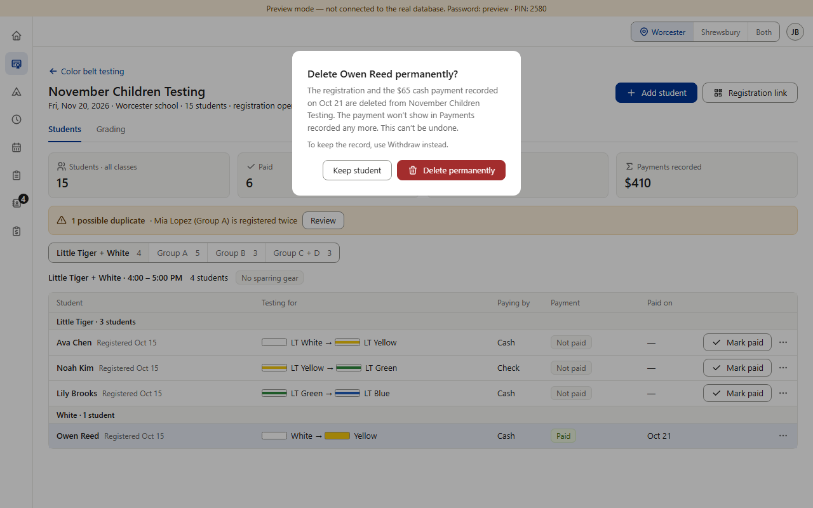
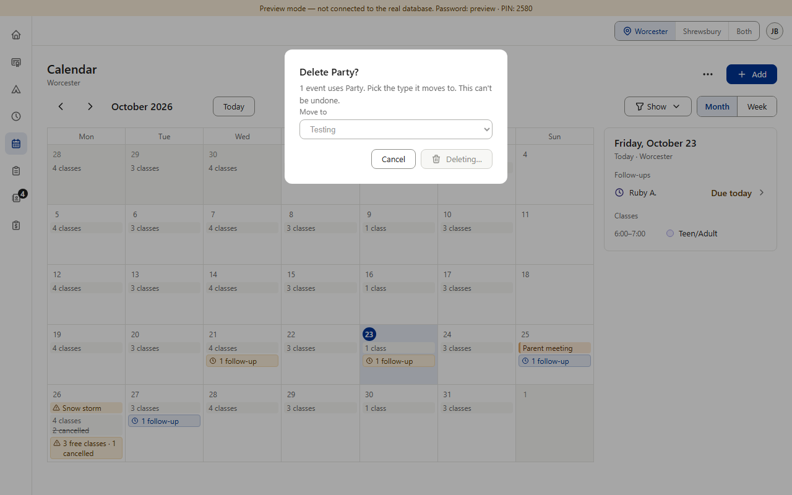
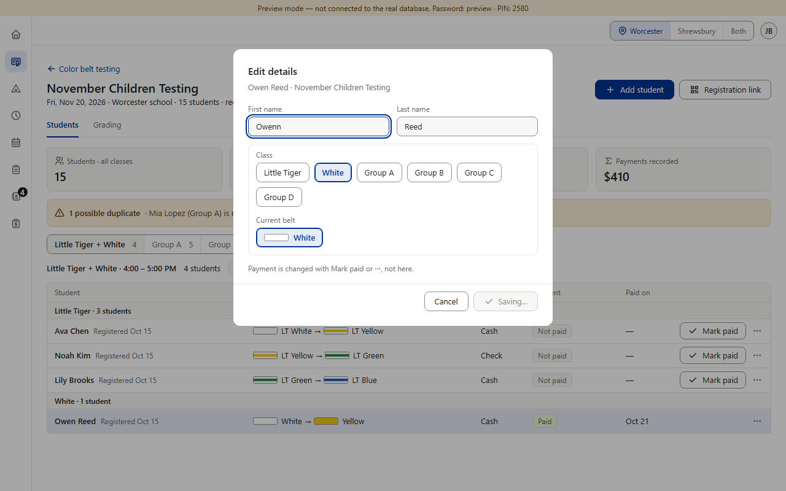
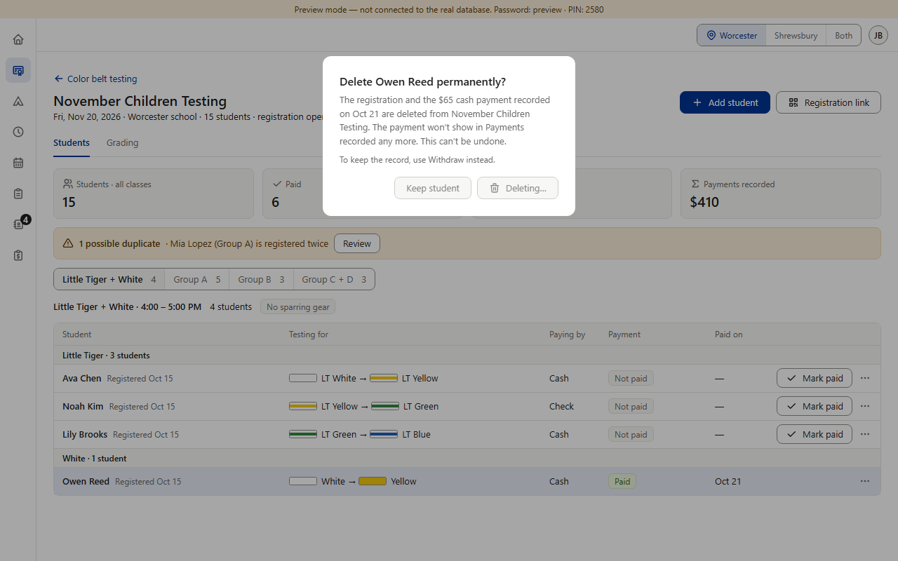

From item 8; needed before Main builds the shared confirm box (item 19). Today, while a box waits for the database: most show no change at all — the button is marked busy for screen readers only, so it looks the same and the box can still be pressed or closed; Calendar's delete turns the red button gray with “Deleting…” (Prospects also says “Deleting…”); Forms, Color Belt private testing and Black Belt say “Saving…”; kiosk mode says “Opening…”. Every form dialog's Save already turns gray and says “Saving…” (approved detail 8). (Tested in the preview with a 6-second slow save set to fail, so nothing was deleted · PC size · fake data)



